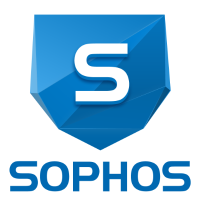

GIP Website Kenzo Van de Winckel

A good virus scanner is always important, especially when you have a big company with more than 150 computers in your domain. That is why I had to install a good virus scanner in my training company.

They chose Sophos antivirus because it is an easy usable virus scanner in a domain. The previous virus scanner (MacAfee) used one license for each computer. Sophos uses one license for each member in a domain that is linked to a pc. In that way the network administrator had to buy fewer licenses using Sophos instead of MacAfee. Sophos has a dashboard where you can login as a network administrator and get alerted when a PUA (potentially unwanted application) is detected, you can see there how many licenses are used, when a pc installed the antivirus and so on. The antivirus is easy to install and the dashboard is easy to use, so in an enterprise where a high performing virus scanner is not really necessary it is a good price/quality antivirus.
In addition to the virus scanner you can also get the Sophos SG UTM. It is a security package where you can configure a lot on your network. For example you can block sites that are forbidden or not needed in the network (like Social media, Games). You can set timetables so you are only allowed to go on the internet between chosen hours or allowed to go on the internet for a certain time. You can also secure your emails. For example you can change the settings so Sophos is automatically going to delete spam and it will be better secured against spam. The Sophos utm also has an easy-to-use dashboard, it could easily be used by people who do not know a lot about computers. In general there are 3 cons about Sophos in comparison to other virus scanners. There is an app available for mobile devices, it is installed in less than 15 minutes and it can be both used for mac and windows. There are also 2 about the virus scanner. It is not cheap(but every virus scanner costs money) and it is not the very best virus scanner if IT and security are really important.
http://www.toptenreviews.com/software/security/best-small-business-antivirus/sophos-review/
In this review they did some tests that they did on all their virus scanners. Sophos scored five out of six. It is not that bad, but there are a lot virus scanners that score six out of six. A virus scanner that could stop all the viruses has not been invented yet but we want the best virus scanner that we can get. Some pros the review sums up are that it supports all platforms and that it has a lot of functions and it is easy to use. Cons that the review sums up are that Sophos can slow down your computer and that there are virus scanners which had better results from tests.
In general the review is still positive about the virus scanner.